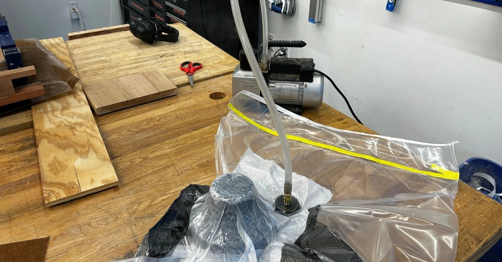

Carbon Fiber Wheel Hubs
Vacuum-bag carbon fiber, to maintain strength while losing weight.
| Where | UCSD Yonder Dynamics |
|---|---|
| When | 2025 |
| Process | Onshape, laser-cut reference profile, wood-lathed and epoxy-sealed mould, three-ply vacuum bag wet layup, Tormach PCNC 440 post-processing |
| Outcome | 50% lighter than the old PLA hubs |


Our rover was running dangerously close to the University Rover Competition weight limit, and we deemed our old high-infill PLA wheel hubs one of the easiest components to cut weight from. Thus, I decided to design and manufacture carbon fiber replacements.
I imported the wheel geometry into Onshape and tailored the hub profile to the internal curvature and motor shaft offset. The external mould was wood-lathed against a laser-cut acrylic reference and sealed with epoxy. I then ran a three-ply vacuum-bag wet layup, and after curing I post-processed the hubs on a Tormach PCNC 440 to clean up excess resin and stage the screw holes.
The finished hubs came out 50% lighter than the PLA originals, and ran on the rover.